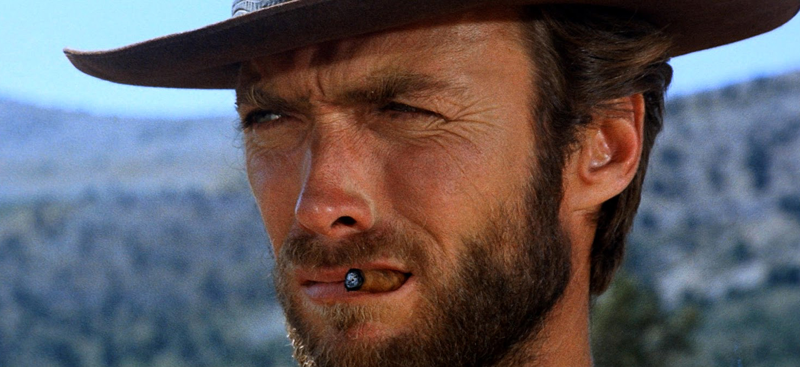

Curiosidades de cine
26 Julio de 2018
Si bien cada película es un mundo aparte, un universo imaginario, una creación paralela, cada escena, cada toma, cada plano, albergan una infinidad de anécdotas y curiosidades para contar, las cuales no pueden faltar, para que todo cinéfilo pueda contar, por esa razón, en este artículo me dispongo a contaros todas las anécdotas y curiosidades que conozco, de las obras maestras de este arte.
NÚMERO 1. Kubrick y Franco
Cuando Stanley Kubrick se dispuso a rodar uno de sus primeros e icónicos largometrajes, "Espartaco", se decidió por España para grabar su obra, para ello, pidió permiso a Franco para que este le dejara soldados, que pudieran salir en la película. Franco rechazó la propuesta porque no le gustó la idea de que se vieran soldados españoles muriendo, aunque fuera "disfrazados" y en una película. Finalmente aceptó, a cambio de una donación a la Sección Femenina, asociación de la que se encargaba la mujer del dictador.
NÚMERO 2. No ser o no ser
Todos conocemos la película "Ser o no ser" de Ernst Lubitsch, una de las mejores comedias de todos los tiempos, es una sátira del nazismo la cual fue censurada por Franco, y no se vería en España hasta su estreno en el cine bellas artes de Madrid más de 20 años después de la muerte del propio director. y casi 30 años después de su estreno mundial.
NÚMERO 3. Marlon Brando y el algodón.
"El Padrino" es una de las películas más famosas de todos los tiempos, en ella podemos comtemplar la maestría del Marlon Brando, Brando, durante la prueba para la película, consiguió que la cara del Don Corleone “fuera como un bulldog”. Lo hizo metiendose bolas de algodón en los carrillos. Durante el rodaje, utilizó una protesis dental hecha por un dentista.
NÚMERO 4. La carta secreta de Hitchcock.
"Crimen Perfecto" es una de las películas de Hitchcock, sin embargo, no es de sus mejores obras, y esto se debe a que La Paramount, cuando ya estaba la película casi lista, le envió una carta a Hitchcock, presionándole para que cambiara todo el film, y así tuvo que hacerlo, porque no querían que Cary Grant, se viese como "el malo" debido a su carisma y relevancia en el momento. Como todos sabemos, Hitchcock aparece en cada una de sus películas con un breve cameo, en este caso, lo hizo apareciendo junto a un buzón, enviando una carta, como reivindicación y queja ante el destrozo de la Paramount al film.
NÚMERO 5. Clint Eastwood, la salud es lo primero.
A pesar de que aparece fumando en algunas de sus películas más icónicas, Clint Eastwood jamás ha sido fumador, pues siempre ha estimado mucho su salud y la ha cuidado haciendo deporte, llevando dietas sanas y practicando diariamente meditación trascendental. De hecho, cabe destacar el hecho de que gracias a su elevada estatura, y su vida saludable, llegó a ser jugador universitario de baseball, y entrenador de baloncesto, además de socorrista, obteniéndo éxitos a nivel deportivo.
